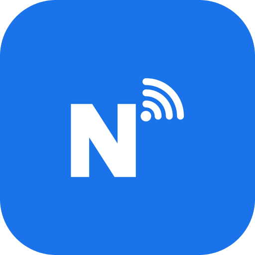

Google TV·Android TV에 NShare를 설치하면 iPhone, iPad, Mac, Android 폰, Windows PC의 화면과 소리를 TV로 보낼 수 있습니다.
Install NShare on your Google TV or Android TV, then share the screen and sound of an iPhone, iPad, Mac, Android phone or Windows PC.
TV의 Play 스토어에서 "NShare"를 검색해 설치하세요. 앱을 켜 두면 같은 Wi-Fi의 기기에서 바로 보입니다.
Search for "NShare" in the TV's Play Store. Once it runs, devices on the same Wi-Fi can see the TV.
앱이 필요 없습니다. 기본 기능인 AirPlay를 씁니다.
No app needed: it uses the built-in AirPlay.
음악·동영상 앱의 AirPlay 버튼으로 보내면 TV가 직접 재생해 더 선명합니다(YouTube 등).
Sending a video or song with the app's AirPlay button lets the TV play it directly, in full quality (YouTube and others).
휴대폰과 태블릿에 NShare 앱을 설치하세요.
Install the NShare app on your phone or tablet.
Windows 10·11 PC의 화면과 소리를 보냅니다. 그래픽 카드의 하드웨어 인코더로 선명하고 빠르게 보냅니다.
Shares a Windows 10 or 11 PC's screen and sound, encoded by the graphics card for a sharp, fast picture.
베타는 아직 서명 전이라 "Windows의 PC 보호" 창이 뜰 수 있습니다. 추가 정보 → 실행을 누르세요. 처음 실행할 때 방화벽 창이 뜨면 허용해 주세요.
The beta is not signed yet, so Windows may say it protected your PC: choose More info → Run anyway. Allow NShare when the firewall asks on first start.
TV에서 NShare가 켜져 있는지, 기기와 TV가 같은 Wi-Fi(같은 공유기)에 있는지 확인하세요. 게스트 Wi-Fi는 기기끼리 연결을 막는 경우가 많습니다. Android·Windows 앱에서는 TV 화면에 표시된 IP 주소로 직접 연결할 수도 있습니다.
Check that NShare is open on the TV and that both are on the same Wi-Fi (same router). Guest networks often block devices from seeing each other. The Android and Windows apps can also connect to the IP address shown on the TV.
저작권 보호(DRM) 영상은 화면 공유로 보낼 수 없도록 운영체제가 막습니다. 그런 앱은 앱 안의 Cast 버튼으로 TV에 내장된 Chromecast로 보내세요.
The operating system blocks copy-protected (DRM) video from screen sharing. Use the app's own Cast button to send it to the TV's built-in Chromecast instead.
보내는 기기에서 끝내거나, TV 리모컨의 뒤로 버튼을 두 번 누르세요.
Stop it on the sending device, or press Back twice on the TV remote.
5GHz Wi-Fi를 쓰고 공유기와 가까이 있으면 가장 좋습니다. PC는 유선 연결이 가장 안정적입니다. 네트워크가 느리면 앱이 화질을 자동으로 낮춥니다.
5 GHz Wi-Fi close to the router works best, and a wired connection is best for a PC. On a slow network the apps lower the quality automatically.